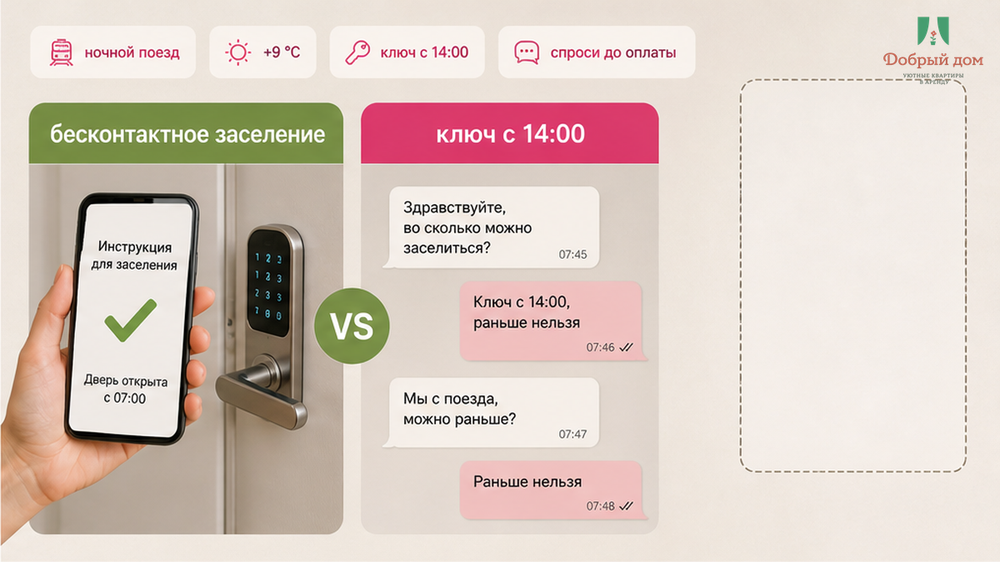
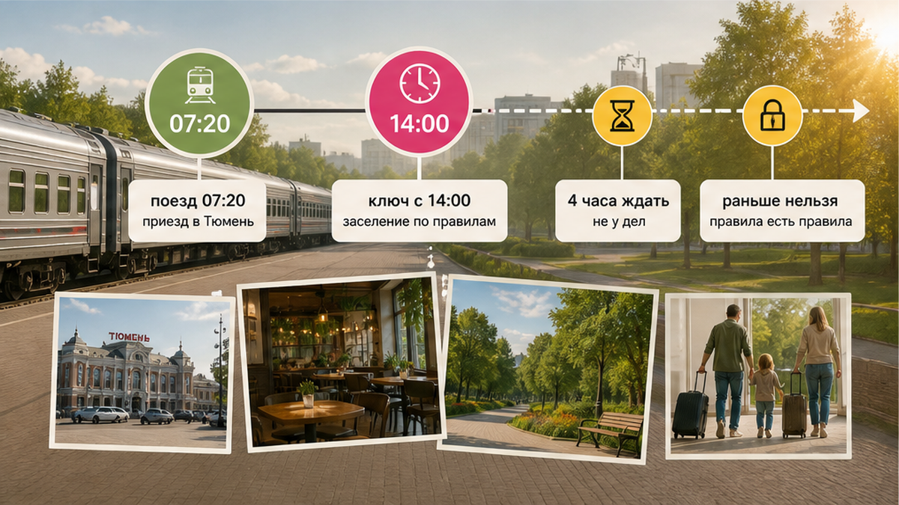
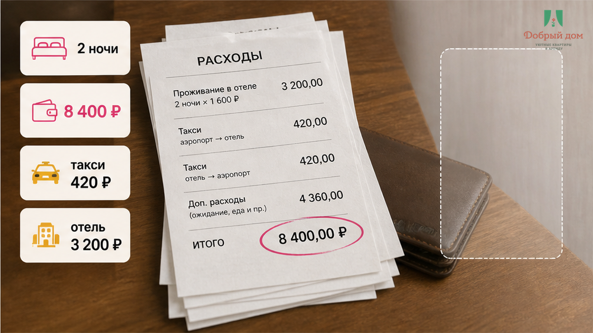
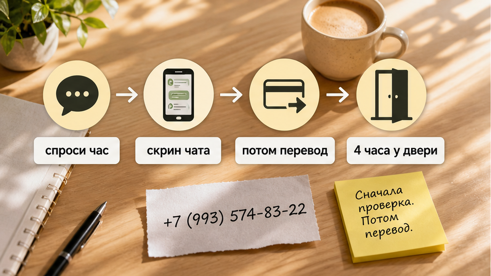

В объявлении было два слова, из-за которых вся поездка и сложилась так, как сложилась: «бесконтактное заселение». Семья прочитала их как обещание — код на двери, ждать никого не надо, приехал и зашёл. Двое взрослых, ребёнок, две ночи, 8 400 ₽ переведены сразу, чтобы бронь не ушла. Ночной поезд пришёл утром. На вокзале было +9 °C, ребёнок спал на коленях, чемодан дребезжал по плитке, такси до дома стоило 420 ₽. А дальше была дверь, у которой нужно было простоять четыре часа с копейками.
В чате после перевода появился ответ хозяина: «ключ с четырнадцати, раньше нельзя». Можно было сидеть на лестничной клетке, по очереди выходя греться в магазин, или снять номер в отеле на полдня — ещё около 3 200 ₽ сверху к уже оплаченным ночам. Никто не соврал: код действительно приходит в чат, хозяина видеть не нужно. Только слово «бесконтактное» отвечало на вопрос «кто вас встретит», а семья услышала в нём ответ на вопрос «во сколько мы войдём». Это разные вопросы. Цена разницы — четыре часа и простуженный ребёнок.
Я хост посуточной в Тюмени. Это «Добрый дом». Про такие ситуации мне регулярно пишут в Telegram и MAX: «Мы же оплатили, почему нас не пускают?»
Не бесконтакт подвёл. Не обязательно подвёл и хозяин. Просто час ключа никто не написал буквами до оплаты — ни он, ни гость не спросил.

Бесконтактное заселение убирает одну проблему: не нужно ловить человека с ключом. Поезд задержался, приехали ночью, вышли из вагона в час — код в чате, замок открылся, никто не ворчит. Это удобная вещь. Но она не отменяет уборку и расчётный час.
Между жильцами квартиру моют, меняют бельё, проверяют, не осталась ли зарядка за диваном. Пока предыдущие гости не уехали и уборка не закончилась, за дверью не «пусто». Там ещё чужая ночь. Код не делает квартиру свободной раньше, чем она свободна. Я подробно разбирал эту разницу в материале «бесконтактное заселение» без часа ключа.
В переписке есть фраза «код пришлём за час до заезда»? Тогда бесконтакт — про способ. Есть фраза «войти можно с такого-то часа, ключ доступен круглосуточно»? Тогда речь уже о времени. Если нет ни одной, ни другой формулировки, у вас есть только картинка в объявлении.

Гость рассуждает понятно: я оплатил двое суток, поезд пришёл утром, значит, мои сутки начинаются утром. Но посуточная квартира живёт не по времени вашего поезда. Есть расчётный час: заезд обычно с 14:00, выезд до 12:00, у кого-то расписание немного отличается. Оплачиваются календарные ночи внутри этого режима, а не двадцать четыре часа от момента прибытия.
Поэтому утро превращается в развилку: ждать до расчётного часа или отдельно договариваться о раннем заезде. Он бывает по запросу, за доплату примерно от десяти до пятидесяти процентов стоимости ночи, а где-то невозможен. Фильтр «ранний заезд разрешён» тоже не означает «ключ в семь утра бесплатно»: обычно это приглашение спросить и согласовать условия.
«А можно зайти в восемь утра, если я и уеду в восемь утра? Симметрично же». Нет. Так не заселяем. В квартире в это утро могут быть предыдущие жильцы, а после них — уборка. Ваш ранний вход означал бы чей-то ранний выход, о котором с тем человеком никто не договаривался. Симметрия существует в голове гостя, но не в расписании квартиры.
Скажите честно: слово «бесконтакт» для вас — это код в любое время или только способ получить ключ в разрешённое окно? Напишите ваш вариант мне в Telegram или в MAX — там отвечаю, под статьёй переписки не веду.

Соберём деньги этого утра. Две ночи — 8 400 ₽. Такси с вокзала — 420 ₽. Запасной сценарий с номером на полдня — около 3 200 ₽. Одна ненаписанная строка «ключ с четырнадцати» стоит либо этих трёх тысяч сверху, либо четырёх часов на холоде с ребёнком. Причём те же 3 200 ₽ могли бы стать заранее согласованным ранним заездом — если бы о нём договорились до перевода, а не в момент, когда семья уже стоит у двери.
Если зазор всё-таки случился, багаж лучше не превращать в наказание. Камеры хранения на вокзале работают круглосуточно: можно оставить чемоданы, уйти позавтракать и вернуться к часу ключа. Такой же вопрос возникает после выезда, когда поезд вечером. О нём есть отдельный разбор: куда деть чемоданы между выездом и поездом.
Есть и вторая причина не торопиться. «Оплачивайте сейчас, бронь уходит, даты ещё смотрят» — после такой фразы гость переводит деньги, а условия читает потом. Тогда обнаруживаются час ключа, залог и дополнительные платежи. Механизм «перевели предоплату — и тишина в чате» я разбирал в отдельном случае про предоплату и тишину в чате.
Рядом живёт другой вариант: «всё включено», а такси, уборка или полотенца внезапно оплачиваются отдельно — как в истории с доплатой за такси после «всё включено».

Мораль этого утра короткая: Сначала проверка. Потом перевод. Не наоборот. Время входа — не мелочь и не техническая деталь. Пока оно не написано в переписке, вы покупаете не квартиру, а надежду на то, что хозяин окажется гибким.
Час заселения — это дверная ручка договорённости. Пока вы не нащупали её заранее, оплаченная бронь не помогает открыть дверь раньше расписания. Поэтому у нас час входа называется письменно до оплаты, а не после неё. Если квартира занята до расчётного часа, я скажу об этом прямо: ранний заезд можно обсуждать отдельно, а иногда его нельзя обещать вовсе.
Тюмень — город утренних поездов. Посуточная квартира должна учитывать расписание вокзала, но гостю тоже нужно увидеть настоящие условия до перевода. Спросить час ключа можно в Telegram или в MAX. Забронировать напрямую: добрыйдом-72.рф/booking. Сайт: добрыйдом-72.рф. Телефон: +7 (993) 574-83-22. Менеджер: @Dobriy_dom_Tyumen.